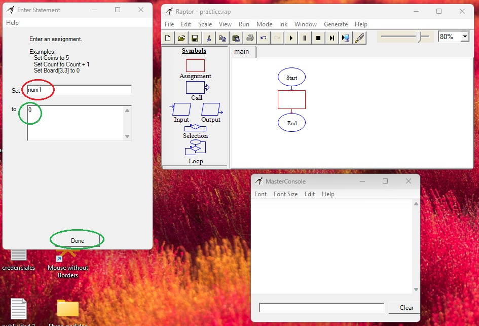
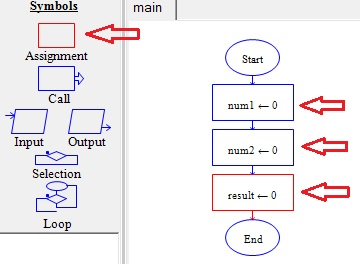
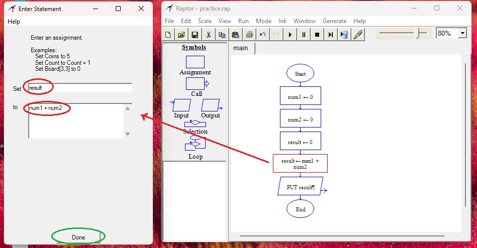
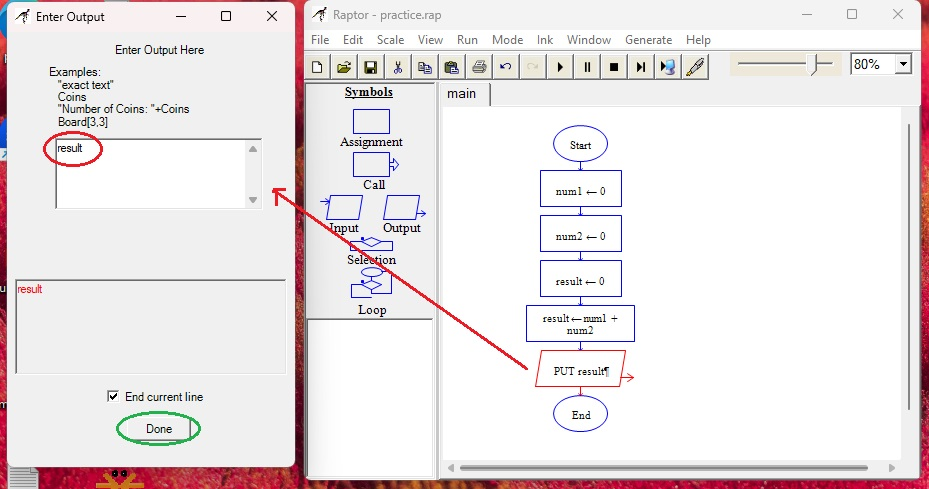
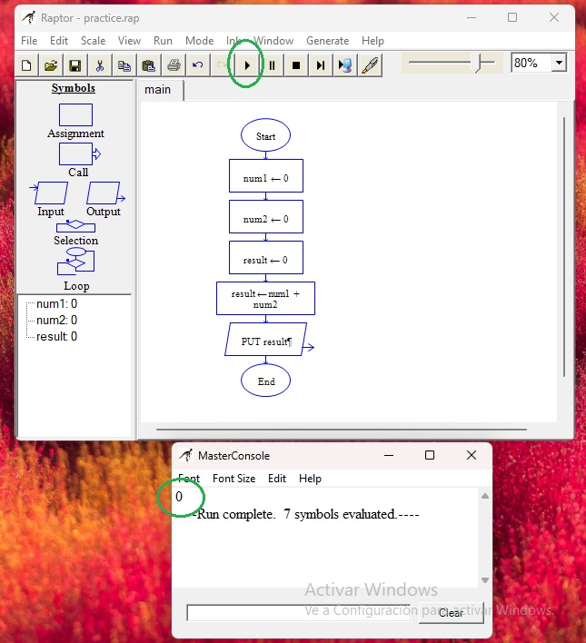
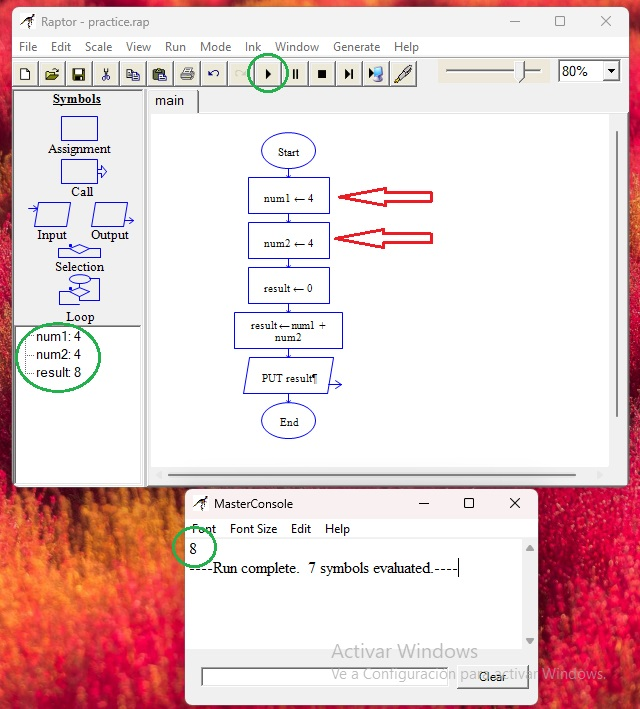

Variables
Al leer un código de programación, hay que tomar en cuenta que se lee de adelante hacia atrás. Veamos, al crear nuestra variable num1 de valor cero, se lee así: cero se guarda en num1 ó (num1 <- 0)
Creamos dos variables más, les llamaré num2, que será el otro número de la operación y result al que será el resultado; podría llamarle sólo num3, pero result (o resultado) limita más su objetivo, sabemos que esa variable no será algo más que un resultado. Bien, les establecemos el valor inicial en cero y listo


vamos a necesitar una cuarta variable que ejecutará la operación, le llamaremos result (porque será la misma variable que cambiará) y en el siguiente campo escribiremos la operación, que será: num1 + num2
entonces se leerá num2 suma num1 se guarda en variable result ó (result <-- num1 + num2)
agregamos el último símbolo a nuestro programa "output" y simplemente le nombramos result, ya que queremos que nos muestre cómo quedó la variable result al final del programa.


antes de tocar el boton "play" para ejecutar o correr nuestro programa, haremos un análisis: la variable num1 vale cero, y la variable num2 vale cero. Hay una operación que dice que la variable result será el resultado de la suma de num1 y num2. De forma clara, el final de la variable result también será cero ya que 0 + 0 es 0. Y el programa está corecto, para comprobarlo, toquemos el botón "play".

Entonces, cambiemos los valores de num1 y num2 y corramos el programa de nuevo tocando el botón "play"

Como ven, ya han creado su primer programa.